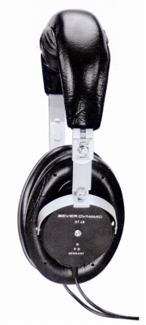
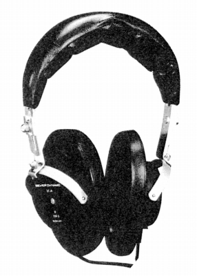
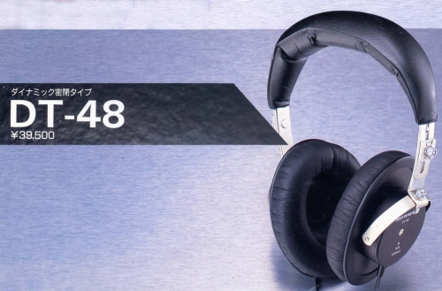
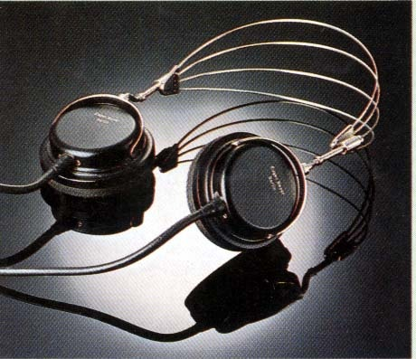

DT-48



画像は上段が長瀬産業時代、下段が80年代のカタログのもの
■価格 26,500円
■型式 ダイナミック型
■振動板
■インピーダンス 8Ω
■再生周波数帯域 16-20,000Hz
■許容入力 200mW
■感度
■コード 1.5m
■重量 360g
■発売 〜1973年頃
■販売終了
■備考 上記は長瀬産業扱いの1973年のデータ
（1975年の報映産業時代）
■価格 29,500円 77年 32,500円 81年44,500円
80年代末の報映産業時代のカタログより
■価格 39,500円
■インピーダンス
8Ω(別にステレオ仕様で200Ω、モノラル仕様で50Ωモデルあり）
■再生周波数帯域 16-20,000Hz
■許容入力
96.8mW
■感度 105dB
■重量 400g(コード含まず）
松田通商時代の製品カタログでは消えていた。
しかし「レコーディング＆PA機器2000-2001」によれば松田通商時代にも250Ωバージョンが売られていたようだ。
その際のスペックは価格が60,000円であること以外は放映産業時代のカタログに準じる。
(2008年のティアック時代）
DT-48E/25
■価格 62,000円
■インピーダンス
250Ω
■再生周波数帯域 5-30,000Hz
■許容入力 100mW
■感度 97dB
■重量 250g(コード含まず）
(松田通商時代のカタログに掲載されたDT-48の原型？)
